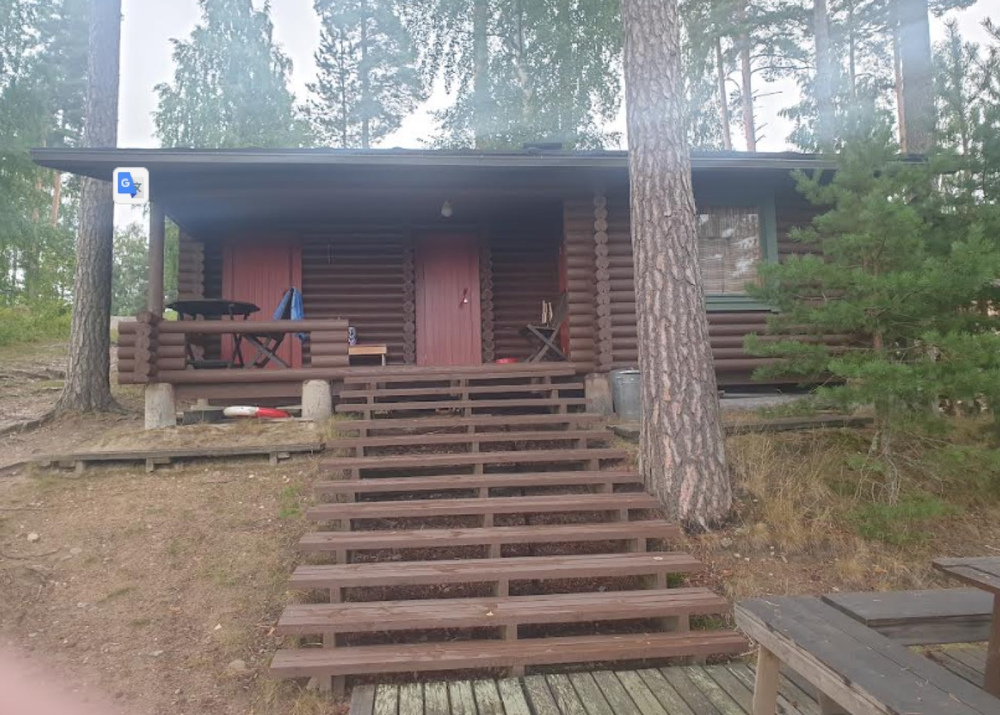
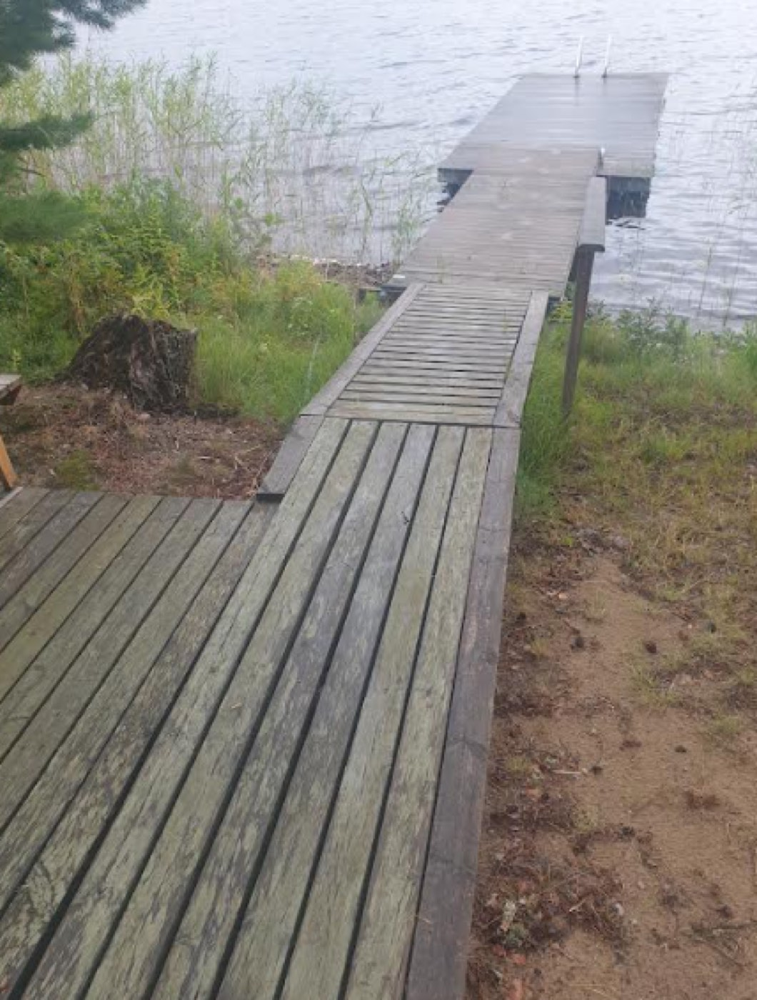
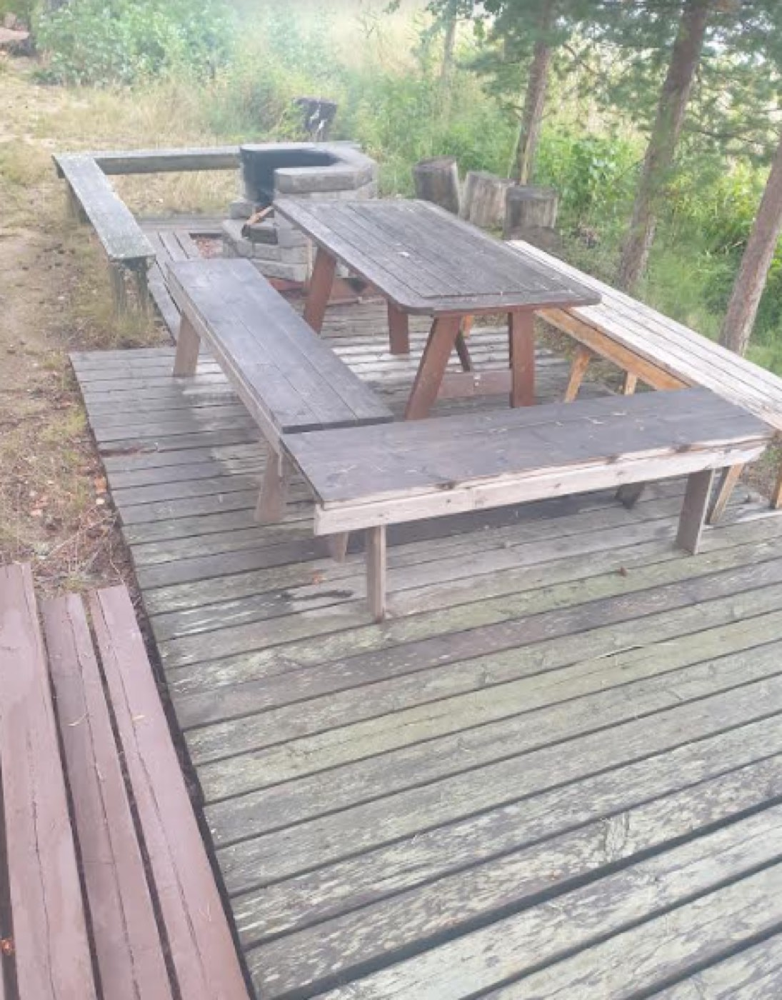

Rantasauna
Savitaipaleen kunta on vuokrannut entisen leirikeskuksen saunan ja sitä ympäröivän maa-alueen asukasyhdistyksen hallintaan, käyttöön ja hoitoon.
Tiedote saunan käyttäjille
Saunojen käyttö on ollut edellisiä vuosia vähäisempää. Talkoilla tekemämme puut hupenevat kuitenkin kovaa vauhtia.
Uusi vesiautomaatti on toiminut hienosti ja helpottaa saunatoimia. Nyt pesuhuoneissa on letkut, jotka ylettyvät kiuassäiliöön asti. Saunoista huolehtimaan ja talkoita valmistelemaan on valittu Hannolat. Ideoita toivotaan.
Ennen kuin aloitat lämmittämään kiuasta, poista tuhkat. Olkaamme kohteliaita seuraaville saunojille: siivoamme aina saunan ja kannamme uudet klapit pukuhuoneiden puulaatikoihin.
Kaikille hyvää saunomiskesää! — Hallitus

Käyttöoikeus ja maksut
- Kuka saa käyttää
- Yhdistyksen sääntöjen mukaisesti rantasaunan käyttöoikeus on vain jäsenillä (perhe), jotka ovat maksaneet liittymis- ja avainmaksun, yhteensä 20 €. Avaimen voi saada ”perintönä” edelliseltä asukkaalta. Jäsenellä voi luonnollisesti olla vieraita mukana.
- Saunamaksu
- 2 € / 2 tuntia, kun sauna on varattu yksityiskäyttöön — pääasiassa klo 15–23 kahden tunnin jaksoina. Muina aikoina saunat ovat yleiskäytössä ja maksuttomia.
- Sidosryhmät
- Asukasyhdistyksen jäsenten sidosryhmille saunamaksu on 10 € / sauna / 2 h.
- Maksaminen
- Maksa saunamaksusi mieluiten verkkopankissa yhdistyksen tilille. Viite 1818, tai viestiksi esimerkiksi ”Saunamaksut 062023”. Tilinumerot ovat yhteystiedoissa.
Jäsenten on hyvä tiedostaa, ettei saunamaksu kata saunoista aiheutuvia kustannuksia, kun otetaan huomioon hoidossa tarvittavat kymmenien tuntien talkootyö ja polttopuut.
Talkoilla ylläpidetty
Paimensaaressa on ainutlaatuinen asumiskonsepti, jonka soisi yleistyvän järviemme rannoilla: kaikkien ei tarvitse omistaa rantaviivaa ja omaa rantasaunaa. Usein tuntuukin, että on kylpemässä ”omalla rantasaunalla” oman perheen kesken.
Saunaa kunnostetaan ja ylläpidetään talkoilla. Isompia talkoita järjestetään ainakin kahdet vuodessa, ja niiden lisäksi muutama henkilö hoitaa saunoja. Rantakaistaleelle on rakennettu terassitasanne, jossa on pöydät ja penkit sekä grillauspaikka.

